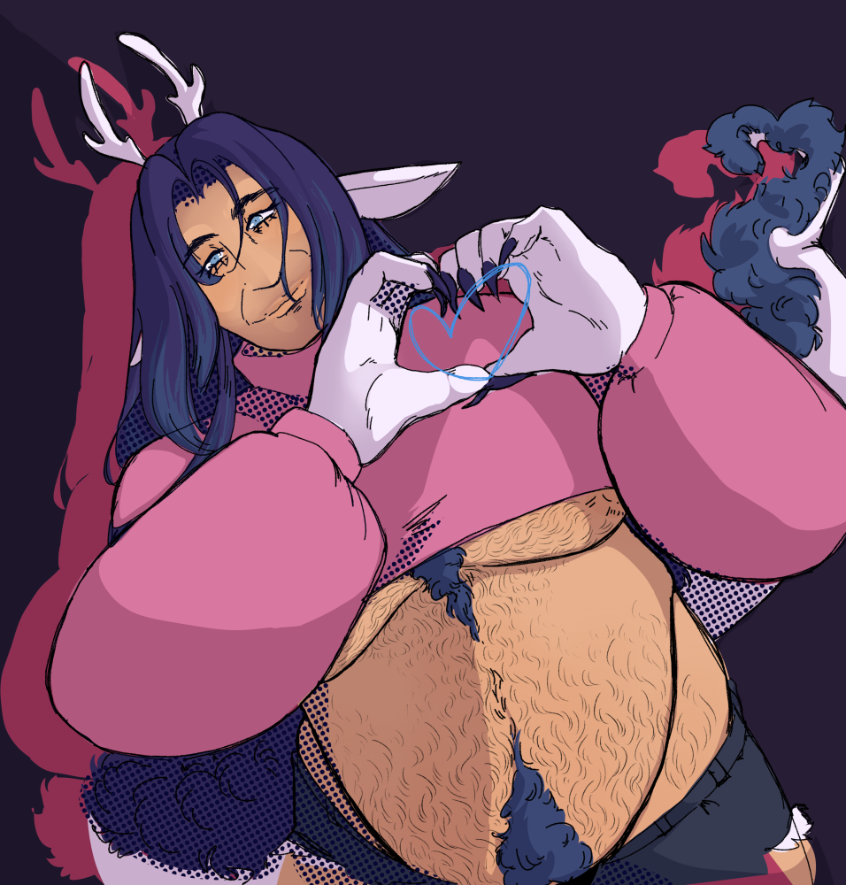

Barrett

A beautiful man who loves, and loves with his whole heart, and has left behind a dreary past for a life with his literal soulmate and the family that found him. Being a succubus has it's ups and downs and for him the downs were pretty tough, him tougher, and the ups are exceptionally high now.
Personality
In the kindest way possible, he's a bit of an airhead, and has the heart of a lover and romantic, even if it took quite some time to find his someone and then lavish him in it. Generally he's pretty 'big' with his emotions and they are known to everyone around him. He's a little silly, and it's very endearing, at least to his lover.
However, in the past he took an aloof sort of attitude as a mask, and used a threatening and dangerous act for those who craved the theater of it in the bedrooms and inns he begrudgingly entered. He left that behind the day he was asked to stay the night as a lover and a partner instead of being used and disposed of like some shameful sex toy.
History
He spent a long time drifting around, with no place to call home, some of his only consistent friends have been his two fellow succubi, Lalowe and Val. His need for sexual energy is high and as a solborne, it demands the other party enjoys it and stronger, heightened emotions yield more energy. It's not what he wanted, but his way to muddle through this was to be a sexual fantasy for people and fulfil their desire to be dominated by a stern, strong man. This was most of his life. He acts like this wasn't a problem. It was.
In Lalowe though, he found someone who needed some extra help getting through life, and he sympathized greatly with her struggle, even if in trying to help her, he sometimes fell harder into the persona he invented, but Lalowe liked to push back against it and get him to loosen back up.
In Val, he found someone who thought he was beautiful, even more so when he dropped the act. He also found someone just naturally made him let up and act more like himself, and who wanted his company in earnest.
Those two are the reason he could and did abandon the almost unending monotony of his life.
Relations

The Solborne Wyrm Succubus to Val's Noxborne. Quite literally a mated pair of succubi. The first hookup was a chance meeting at an inn where both needed energy that sealed a deal unknown to them, completely unaware that succubi inherited their Wyrm ancestor's ???? to form a very strong bond through sex. After that be it some string of fate, deliberate action, or chance, they would keep meeting up and enjoying each other's company, sexual and otherwise.
While it may have taken an age to confess his feelings after fucking so many times and leaving Val's bed, bedroll, or inn room before the morning, never considering intimacy was an option in his life... he is now happily married to the love of his life. Some mix of of his own personality and mated succubi tendencies means he's exceptionally clingy, lovey, sweet, and a little possessive. He, like Val, is now subject to separation anxiety, dammed genetics.

He's quite protective of Lalowe, while she was still living with her grandmother, Barrett would come by to pick her up and bring her with him while hooking up with people to feed, so she might get a little energy from being around, or around other sexual acts at events, with care to make sure nobody would pester her. Time has passed, they've drifted in and out of each other's circles, but now that he's settled down with Val, and she's living under the same roof, he can rest easy knowing no harm will ever come to her if anyone has anything to say about it.

John is, obviously, Val's other husband. It would be fair and accurate to say he's more in a relationship with Val, than he is with John, and there was some early tension, exclusively on Barrett's part, for fear he lost his chance with Val, but all is well and good. John is a good man, in the way a certified fucking killing machine is, much the same as Val, and he holds respect for him and appreciates kindness offered to him, in having a home, both still having his lover's heart, and roof that won't be snatched away as quick as it came. Also, they tag team Val in the bedroom nasty style and that's like... high-five worthy.
Sandy will go here
Moth and him aren't the worlds best friends or anything, no, and Barrett can be a touch too much for Moth's preferences at times, they are happy to adventure together and hang out. Hanging out happens... quite often seeing as he's borderline inseparable from Val, and Moth is one of Val's closest friends. He's learned to reduce his speaking volume a little around Moth for their sake, which is noticed and appreciated.
Cassie is a fellow Big Bitch. Big Bitch solidarity. She gave him like... some sick outfit for the holidays once and he will never forget that. Thanks Cassie.
Sex and Kinks
Relationship to sex:
Historically? dogshit. absolute dogshit. He genuinely loves to have sex but when you have to constantly settle for whatever's available or starve and suffer, it does some weird things to your brain. Reduced down to a sex object more than not, he would usually fill the role of the aggressor, a dominant, a rough man, to fulfil fantasies and disregard his wants and needs. Intimacy wasn't in the cards for him for quite some time.
Now living in a proper home, with a partner who he is never letting go of, or ever being let go by, he gets to indulge in things that make him and Val happy, as often as he wants. Being bonded in that special succubi way, and with his distaste for what life he had to live, he only has sex with Val, and the only other person who's allowed to join in is John. He enjoys being a top, and doesn't like being on the receiving end of penetrative sex, but he will eat Val's pussy as if the world would end if he didn't.
As for kinks, kinks and fetishes? Yes...
He likes feet, maybe it has something to do with him lacking "normal" feet and finding them different and exciting, or maybe he's just destined to be a regular ol certified foot guy. It matters little. What does matter is that he adores Val's, sucking on them, licking them, getting a foot job, whatever it is, gods he's happy about it. It's meaningful for him as it's one of the sexual fantasies he'd assumed would never be fulfilled, but luckily, his love likes it too, and doesn't think he's cringe, not one bit.
Getting to freely use his husband whenever, wherever. He has Val's complete trust and consent to start fucking him without asking. In the house or outside. Awake or asleep. Not that being asleep matters as much, seeing as Val is a light sleeper, but it makes them both very happy when he wakes Val with his cock.
Showing off and being a bit of an exhibitionist is very fun and thrilling for him. Greatly enhanced by how exclusive his relationship is, with or without the risk of being caught, it's exciting! Sometimes it's less he's doing things in public just for the thrill, and more that he can't keep himself off of his husband, who's also very into being a public pervert.